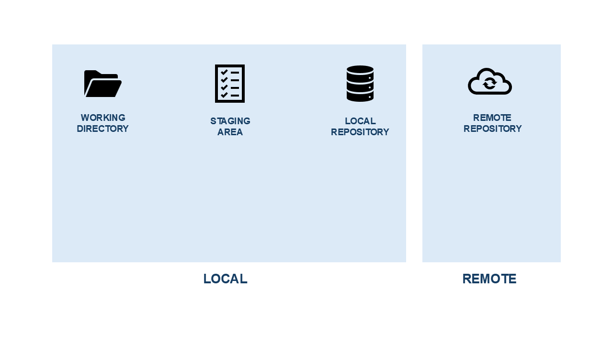
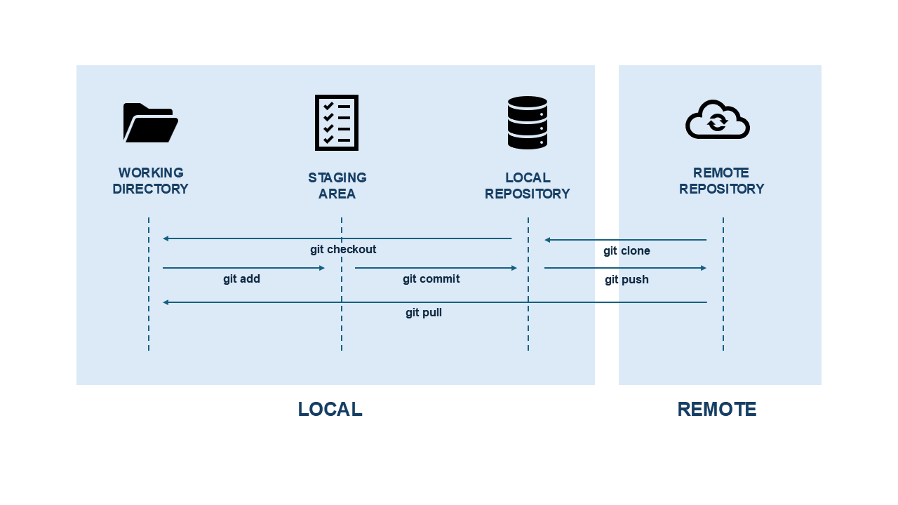
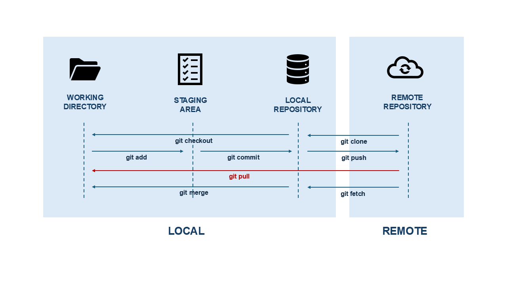
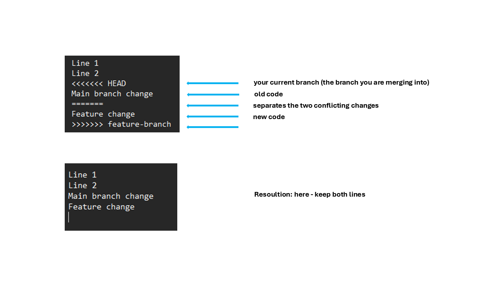
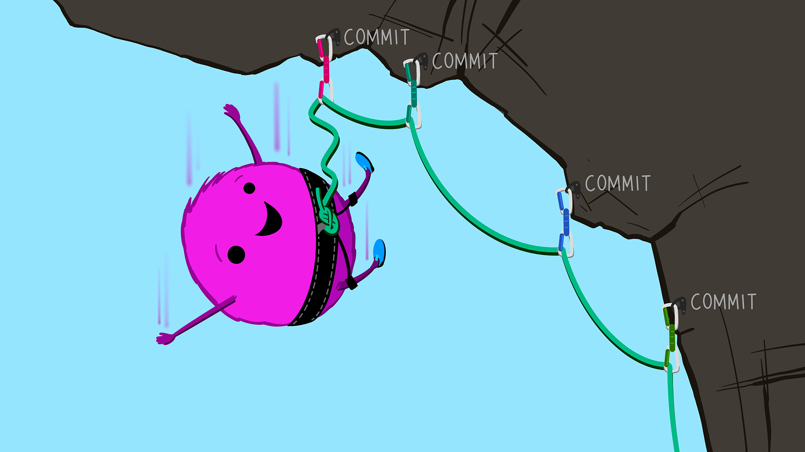

Introduction to R - Day 4
13 February, 2026
Intro
Day 1: basic syntax, classes, objects, functions
Day 2: base package, tidy programming & tidyverse
Day 3:
Part 1: Summarizing data / tables
Part 2: Reporting with RMarkdown / Quarto
Day 4: Git & RStudio
Still missing: further operations on vectors. graphs, referencing in rmd/qmd, citations and bibliography
Today …
Git architecture
Forking & branching
Merging
Change history
Basic commands
Discussion about procedures
Hands on & exercises
Git architecture

Git architecture

Git architecture

Git architecture

Git architecture
Git architecture

Git architecture

Git architecture

Git architecture

Git architecture

Git architecture
Git architecture

Git architecture

Git architecture

Git architecture
Forking and branching
Fork:
a copy of someone else’s repository in your own GitHub account
- allows you to work independently without affecting the original project
Branch:
a separate line of development within a repository
- allows to work on features or fixes without changing the main branch
Forking and branching

Merging and merge conflict
- Merging:
- combines changes from one branch into another
- typically integrating a feature branch into main
- but it could also be a fix within a branch
- combines changes from one branch into another
- Merge conflict:
- Git cannot automatically combine changes because the same part of a file was edited differently in both branches
- Resolving conflicts:
- manually editing the conflicting files, keeping the desired changes, then staging and committing the resolution
Merging and merge conflict
Change history - log & reflog
git log:- shows the history of commits in your repository
- includes commit hashes, author, date, and commit messages
- only shows commits that are reachable
git reflog:- shows the history of HEAD movements
- includes commits, branch checkouts, resets, merges, rebases, etc.
- even includes commits that are “lost” or not visible in
git loganymore
Detached HEAD
- a state that happens when a specific commit is checked out instead of a branch (you switch to the state of a commit) e.g.:
git checkout 1b18a33
- if you do changes from this state, they will not belong to any branch and can get lost
- instead, if you want to use it as a starting point, create a branch e.g.:
git checkout -b test-branch 1b18a33
Basic commands
| Command | Description |
|---|---|
| git clone repository_URL | create an initial local copy of a repository |
| git pull remote_name | pull changes from a remote repository |
| git fetch remote_name | fetch changes from a remote repository |
| git add filename | stage a specific file |
| git add . | stage all files |
| git commit -m “Initial commit” | commit and add a commit message |
| git push remote_name branch_name | pushes the changes to the remote repository |
| git status | check the status of the files |
| git log | view commit history |
| git log –graph –oneline | view the history tree (commits are shown in one line only) |
Basic commands
| Command | Description |
|---|---|
| git reflog | view the log of the head |
| git checkout HEAD@{2} | go to an older state of the head |
| git reset –hard HEAD@{2} | reset the head to an older commit |
| git checkout -b branch_name HEAD@{2} | create a branch from a specific state of the head |
| git checkout -b branch_name 1b18a33 | create a branch from a specific commit |
| git checkout -b branch_name | create and switch to a new branch from where you currently are |
| git checkout branch_name | switch to an existing branch |
| git merge source_branch | merge changes from another branch (source branch) |
| git branch -d test-branch | delete a specific branch |
General recommendations
Always pull the current state of the repository before you start working (if others are working on it)
Commit early and often, even after small tasks
Write clear and meaningful commit messages
Do not work directly on the
mainbranch, always create a separate branch for developmentMerge only once your changes are complete and tested
Push your changes frequently when working in a team
Hands on & discussion
How should we work with Git?
There is 1 firm account responsible for creating and maintaining all the project repositories
But everyone also has an account of their own
Everyone forks the project repositories published by the firm accounts, and then:
- works locally on the code, commits & pushes to the own forked remote repositories
- sends out pull requests to the main branch of the original repositories
The person responsible for maintaining the firm account:
- will review the pull requests & incorporate them into the original code (if present)
- or just accept that the file is stored in the original repository
- code releases a produced from the main firm account
Setting up Git
- Installing Git on your computer: https://git-scm.com/install/
- Create a github account: https://github.com/ -> sign up
- Go to your github account & create a new repo called
myfirstrepo - Create a directory on your computer called
myfirstrepo - Go to RStudio
- Create a new Rproject
- File -> New Project … -> Version Control -> Git
- Add a repository URL
- Choose the directory for your Rproject
- Accept & RStudio will clone this repo for you!
Setting up Git (forking)
- Go to the URL of the repo you want to clone: https://github.com/LifeScienceStats/workshopR
- Fork -> Create a new fork -> ( Optional: Copy the main branch only ) -> Create fork
- Now you have a copy of this repo on GitHub!
- You can go back to the previous slide & go through the steps 4 & 5
Exercise 1 - pull request
- In your
workshopRfork: find the file.gitignoreand open it in RStudio.
Note
A .gitignore file tells Git which files or folders it should ignore (i.e., not track or commit). In other words: If something is listed in .gitignore, Git will pretend it doesn’t exist.
Change the file such that you:
Suggest more data formats in the section
#DataAdd a new section
#Docsand suggest common document formats (e.g. .docx …)
Save, stage, commit & push the changes to your fork
Create a pull request:
- Go to the URL of your fork, in the top bar find the button
pull requests, and go on from there (make sure you choose the correct branches).
- Go to the URL of your fork, in the top bar find the button
Exercise 2 - merging
Part 1: merging without a conflict
Go to your R project associated with
myfirstrepoCreate a new branch called
exercise2part1Create a README.md file (if not already present), open it and add a line of text (a sentence is enough).
Save changes, stage, commit & push
Now, go back to the main branch & merge the two branches together
Check whether it has worked (hint: you can look up the log tree)
Commit & push
Exercise 2 - merging
Part 2: solving a merge conflict
Create a new branch called
exercise2part2Add another sentence to your previously written one.
Save changes, stage, commit & push
Go back to the main branch & try to merge the branches.
Check whether it has worked. If not: resolve the conflict in a way you want your final text to look like.
Commit & push
Exercise 3 - code development with version control
By now, you should have forked the repository
workshopRex, now pull the current version of itYou will be able to find a pdf-file with some guidance on what you are expected to write your code for (the data will be provided via the internal cloud)
But before you jump in:
Create a sub-directory
your-name-ex3with a meaningful internal structure (e.g. subfolders for data, scripts, output …)Think about how to set up the .gitignore file, so nothing is shared on github that is strictly internal
Remember to work with branches & frequent commits
Go through the exercise in the pdf-file, push all your changes to the forked repository & create a pull request
The end
https://allisonhorst.com/git-github
Introduction to R - Day 4